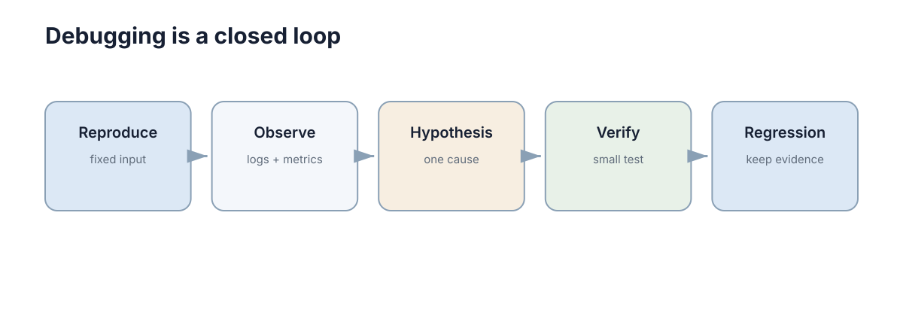

pytest & Debugging
测试回答“这个行为以后还能不能保持正确”，调试回答“它现在为什么不正确”。两者结合，才能把一次修复变成长期可靠的系统。测试把已经确认正确的行为固定成可自动执行的约束，调试把当下未知的故障缩小到某一段代码、某一次数据传递或某一个错误假设上；只有测试没有调试，团队会被红灯淹没却不知从哪查起，只有调试没有测试，同一个坑会反复踩。

测试层级与边界覆盖
测试层级回答的是“这条断言站在哪一层验证系统”。最常用的三层是：
- 单元测试：验证一个函数、一个类或一个模块的内部逻辑，不启动网络、数据库和真实硬件；
- 集成测试：验证两个及以上模块通过真实接口连接之后的行为；
- 端到端测试：从真实入口走完整流程，例如从任务下发一直走到机器人执行完成。
这三层不能互相替代，因为它们验证的对象根本不同：
| 层级 | 验证对象 | 典型耗时 | 失败通常意味着 |
|---|---|---|---|
| 单元 | 单个函数或模块的逻辑 | 毫秒级 | 算法、条件判断或边界符号写错 |
| 集成 | 模块之间的数据与协议 | 秒级 | 字段、单位、时序约定不一致 |
| 端到端 | 完整业务流程与部署形态 | 分钟级 | 环境、配置或跨进程协作问题 |
越靠下的测试运行越快、定位越容易；越靠上的测试越接近真实系统，但成本更高。因此大多数项目应让单元/集成测试承担主要数量，只保留少量关键端到端流程。
“边界覆盖”里的边界有两层含义。一层是数据边界：取值范围的两端、空集合、只有一个元素的集合、单位换算的临界点、浮点比较的容差。另一层是模块边界：调用方与被调用方之间的契约，例如坐标系、时间戳来源、异常约定和超时语义。
实践中最常见的浪费是把测试数量堆在正常路径上。重复执行十次常规输入，并不会比执行一次提供更多信息；而恰好等于上限的输入、刚越过上限一个极小量的输入，才可能暴露比较符号写反、开闭区间写错的问题。因此设计用例时先问三个问题：这个函数的输入空间被哪些条件切分？每一段的端点在哪里？哪一段目前完全没有测试覆盖？
单元测试先覆盖正常、边界、错误三类情况
一个合格的最小单元测试集，应当对同一个被测单元同时回答三个问题：正常输入是否正确、边界输入是否正确、非法输入是否被明确拒绝。
| 类别 | 典型输入 | 期望结果 | 常被忽略的点 |
|---|---|---|---|
| 正常 | 中间值、典型工况 | 返回预期结果 | 容易被写成同义反复的断言 |
| 边界 | 上下限本身、空集合、单元素 | 返回恰好正确的值 | 开闭区间、浮点容差 |
| 错误 | 非法类型、越界值、缺失字段 | 抛出明确异常或返回错误码 | 静默返回默认值 |
例如一个限速函数：
def clamp_speed(v, limit=1.0):
return max(-limit, min(limit, v))
def test_clamp_speed():
assert clamp_speed(0.4) == 0.4
assert clamp_speed(2.0) == 1.0
assert clamp_speed(-2.0) == -1.0
上面的测试同时覆盖了正常（0.4）和两类边界（正向越界、负向越界），但它没有回答“恰好等于上限时应该返回什么”，也没有回答“传入字符串时会发生什么”。
测试的价值不是证明“代码永远正确”，而是在需求已经明确的地方建立自动检查。一个断言写不出来的地方，往往说明需求本身还没想清楚：到底应该截断、饱和、报错，还是拒绝整个任务？如果连人都说不清，代码里大概率是随手写的。
写单元测试时还有两条纪律：第一，一个测试只验证一个行为，名字要能读出被破坏的需求，例如“超速输入被截断到上限”而不是“test1”；第二，测试之间互不依赖执行顺序和共享状态，否则一旦某天并行执行就会随机失败。
集成测试专门抓单独都对，接起来就错
很多工程故障发生在边界：字段名不一致、单位不同、超时策略冲突、数据库事务没有提交、ROS 消息坐标系不同。
这类错误的共同点是：每个模块单独看都正确，组合在一起才出错。因此集成测试最应该覆盖模块之间真正传递的数据，而不是重复验证模块内部的计算。例如规划模块输出的是米，控制模块却按厘米解释，这类错误单元测试很难发现，因为两个模块各自内部都自洽。
集成测试的常见做法：
- 用真实的序列化格式（JSON、Protobuf、ROS 消息）在模块之间传递数据，而不是直接传 Python 对象；
- 断言跨模块的不变量，例如时间戳单调递增、坐标系一致、单位明确写在字段名里；
- 显式测试失败路径，例如对端超时、消息乱序、重复投递。
有一种专门的集成测试叫契约测试：把接口契约单独抽出来，只要两个模块各自通过契约测试，就可以认为它们能够对接。这在多团队协作中特别有用，因为它把“接口有没有变”这个问题的检查成本从端到端测试降到了秒级。
集成测试的数量不必多，但必须覆盖真实数据流经过的每一条关键路径，尤其是频率最高、最靠近硬件和最容易在深夜出问题的那几条。
测试替身：mock / stub / fake 的区别
当被测代码依赖数据库、网络、电机或传感器时，直接接真实依赖会让测试变慢、变脆。这时需要测试替身（test double）来替换真实依赖。替身不是一类东西，至少有三类，用途完全不同：
| 类型 | 回答的问题 | 行为 | 典型用途 | 过度使用的后果 |
|---|---|---|---|---|
| Stub | “如果依赖返回这个值，我的逻辑对吗” | 返回预先写死的值 | 驱动分支、模拟错误码 | 测试变成对常量表的复述 |
| Mock | “我有没有按约定调用依赖” | 记录调用并被断言 | 验证副作用、验证协议 | 测试与实现细节强绑定，重构即失败 |
| Fake | “用一个简化但真实的实现会怎样” | 有真实逻辑的轻量实现 | 内存数据库、仿真传感器 | 需要自己维护，可能与真实实现漂移 |
三者的分界线在于验证什么：stub 验证被测代码的输出，mock 验证被测代码的行为，fake 提供一个可以真正运行的简化依赖。选择时可以按下面的顺序判断：
| 场景 | 推荐替身 | 理由 |
|---|---|---|
| 只关心不同返回值下的分支 | Stub | 最轻，改动最小 |
| 关心“必须调用一次且不能重复调用” | Mock | 断言的是交互协议本身 |
| 关心依赖的状态变化与多次读写 | Fake | 逻辑真实，能发现状态类缺陷 |
| 依赖本身就很简单、很快 | 不用替身 | 用真实实现最不容易骗自己 |
过度 mock 是测试维护成本的头号来源。 当测试里出现七八个 mock、每个都断言调用顺序时，测试其实是在复述当前实现，而不是在描述业务需求。重构一次实现，测试全挂，但系统行为一点没变。更糟的是，mock 让你无法察觉替身与真实依赖的行为差异——线上失败、测试全绿，往往就是这么来的。
一个更稳的写法是用 fake 代替成套的 mock，把“真实但不慢”的行为留给代码自己：
class FakeSensor:
"""Deterministic stand-in for a real sensor in unit tests."""
def __init__(self, samples):
self._samples = list(samples)
def read(self):
if not self._samples:
return {"range": 1.0} # default reading once the queue is empty
return self._samples.pop(0)
def test_low_battery_triggers_return_to_base():
robot = MissionPlanner(battery=FakeSensor([0.9, 0.2]))
robot.step() # healthy sample
robot.step() # low battery sample
assert robot.state == "return_to_base"
这个 fake 保留了“序列被消耗完”的真实语义，因此它既能测试正常路径，也能测试数据耗尽后的默认行为，而不需要为每个调用点写一个 mock。
覆盖率指标的正确用法
覆盖率（coverage）回答的是“测试执行时碰到过哪些代码”，它是一张地图，不是一个分数。常见的三类统计口径差别很大：
| 口径 | 统计对象 | 能发现 | 盲区 |
|---|---|---|---|
| 行覆盖 | 语句是否被执行过 | 完全没测到的代码块 | 条件判断只走了真分支 |
| 分支覆盖 | 每个分支是否都被走过 | 只覆盖单侧的 if/else | 单个条件的取值组合 |
| 条件覆盖 | 每个原子布尔条件是否为真为假 | 复合条件中的隐藏组合 | 短路求值带来的实际组合 |
用公式写出来，行覆盖率就是被执行的语句行数占可执行语句行数的比例：
分支覆盖率为被走过的分支数占全部分支数的比例：
条件覆盖要求每个原子条件都取过真和假，例如 if a and b: 需要分别让 a 为真/假、b 为真/假。注意分支覆盖并不蕴含条件覆盖，条件覆盖也不蕴含分支覆盖，它们看到的是不同的盲区。
高覆盖率最容易骗人的地方，是代码被执行不等于结果被断言。下面这些类型的缺陷，即使覆盖率很高也照样会漏：
| 高覆盖率仍会漏的缺陷 | 为什么覆盖不到 | 该用什么补 |
|---|---|---|
| 结果计算错误的常量或符号 | 语句执行了，但没有断言数值 | 带期望值的断言 |
| 未处理的异常路径 | 异常被更外层吞掉，未断言行为 | 显式断言抛错或返回错误码 |
| 并发与竞态 | 覆盖率不记录时序 | 压力测试与可重复的并发用例 |
| 集成层单位/坐标系不一致 | 每层内部都自洽 | 契约测试与集成测试 |
| 需求理解错误 | 代码忠实实现了错误的规格 | 需求评审与验收测试 |
因此覆盖率的正确用法是三条：第一，把它当作发现空洞的探测器，重点看未覆盖的那些行是不是关键路径；第二，为不同模块设置不同阈值，核心算法和协议解析要求高，纯展示和胶水代码不必强求；第三，不要为了数字写无断言的测试，那只会让指标更漂亮、系统更危险。
调试要从现象走向最小复现
一个有效的调试闭环是：
复现问题 → 缩小范围 → 提出假设 → 收集证据 → 修复 → 回归测试
最常见的低效方式是“哪里可疑就加一堆 print”。更好的做法是先确定：输入是否正确？错误第一次出现在哪一层？问题是否稳定复现？
调试的真正难点从来不是修复，而是定位。一旦定位到具体的那一行，修复往往只需要几分钟；而在几十个模块里漫无目的地改代码，可能耗掉一整天。因此调试的时间应该几乎全部花在缩小范围上。
assert state.shape == (6,), state.shape
assert np.isfinite(state).all(), state
这种小断言往往比几十行日志更快定位数值和接口问题：因为它把隐含假设写成了显式检查，一旦假设被违反，程序会在第一次违反的地方停下，而不是带着错误数据继续往下跑，把真正的现场搅乱。
调试时还要警惕两种心理陷阱：一是确认偏误，看到不符合自己假设的证据就跳过；二是过早修复，找到一个可疑点就立刻改，结果改动叠加，反而不知道哪个改动起了作用。正确做法是一次只改一个变量，并且每次改动都能被验证。
系统化调试流程
把调试变成流程，才能让经验可复用、可交接。一个可以直接执行的流程是：稳定复现 → 二分定位 → 假设验证 → 修复 → 防回归。
稳定复现是一切的前提。 如果问题无法稳定复现，先花时间构造最小复现（minimal reproduction）：固定输入、固定随机种子、固定版本、固定硬件状态，把变量一个个冻结。最小复现的成本看似很高，但它换来的收益是：问题可以反复观察、可以交给别人、可以写成回归测试。相比之下，靠“再跑一次看看”来调试，每轮都在赌运气。
二分定位是把范围按比例缩小。 在数据流或提交历史上取中点，判断问题在中点之前还是之后，然后重复。对代码可以在中间加断言或检查点；对版本历史可以用 git bisect 自动找出引入 bug 的那次提交；对流水线可以先绕过一半阶段。每一次二分都把搜索空间减半，比起线性排查快得多。
假设验证循环要求每个假设都可证伪。 不要问“会不会是这里”，而要写出“如果是这里出错，那么我应该观察到 X”。观察不到 X 就排除该假设，而不是继续加日志碰运气。
| 现象 | 优先假设 | 验证手段 |
|---|---|---|
| 单元测试全绿但集成失败 | 数据格式、单位或坐标系不一致 | 在模块边界打印原始消息与字段名 |
| 偶发失败、重跑就过 | 竞态、未初始化状态、时序假设 | 固定随机种子、加锁或加同步点后复现 |
| 结果数值缓慢漂移 | 累积误差、积分步长或单位换算 | 断言中间量并做单调性检查 |
| 行为在某次提交后改变 | 某次提交引入了语义变化 | 用 git bisect 二分提交历史 |
| 本地正常、部署后异常 | 环境变量、依赖版本或权限差异 | 比对镜像内依赖版本与挂载配置 |
有了这张对照表，调试不再是“凭直觉猜”，而是“从现象映射到假设，再用最小代价验证”。
日志要帮助回答发生了什么
日志至少应包含时间、关键实体 ID、事件和必要上下文。例如：
10:31:22 task=42 robot=r3 event=planning_failed reason=no_path
不要记录无法行动的信息，如“Error happened”。一条好日志的标准是：读到它的人能否决定下一步做什么。如果日志只说“失败了”，读者仍然要去看代码才知道失败意味着什么；如果日志说 event=planning_failed reason=no_path，读者立刻知道是地图没有可行路径。
日志结构化的好处在规模变大后非常明显：task=42 这样的键值对可以直接过滤和聚合，而自由文本只能靠人肉搜索。建议固定一套字段命名：时间、实体标识、事件名、结果、原因、耗时，并尽量避免在一条日志里塞多种含义。
也不要把高频传感器数据全部塞进普通日志；大量原始数据更适合独立记录或指标系统。日志的正确用途是记录离散的、有语义的事件，而不是做数据采集。把所有原始数据写进日志，结果通常是关键事件被噪音淹没，磁盘被写爆，排查时反而什么都找不到。
日志级别也要有明确约定：DEBUG 用于本地排查，INFO 记录正常但重要的状态变化，WARN 表示还能继续但不正常，ERROR 表示功能已经受损。级别滥用会让告警失去意义——如果什么都是 ERROR，就等于没有任何 ERROR。
在分布式与机器人系统里，日志还有一个额外要求：能够跨进程把一次任务串起来。这通常靠一个贯穿始终的标识实现，例如任务 ID 或追踪 ID，让同一个任务在各模块输出的日志可以被关联。缺少这个标识时，排查一次跨三个进程的故障，需要在三份时间戳不完全同步的日志里手工对齐，效率和准确性都很差。
日志的另一条纪律是避免在热路径上做同步 IO：控制循环里每毫秒写一次磁盘，会让日志本身成为影响实时性的原因。高频信息应当降采样、聚合或改走指标系统，只把语义事件留给日志。
修复之后一定补回归测试
如果一个 bug 能稳定复现，最理想的结束方式不是“现在运行正常”，而是先把它写成失败测试，再修到测试通过。这样同一类错误以后重新出现时，CI 可以在合并前直接拦住。
这个顺序（先写失败测试，再修复）有三个好处：第一，它证明你真的复现了问题，而不是碰巧掩盖了症状；第二，它留下了一个永久防线；第三，它把修 bug 的经验从某个人的记忆转移到了代码库里。
写回归测试时要覆盖同一类错误，而不只是这一个输入。如果 bug 是“单位从米看成厘米”，那么回归测试应该断言单位转换的结果，而不是只断言那一个具体数值。分类思维能让一次故障换来一类防御。
不同来源的 bug，适合用不同形态的回归测试固化：
| bug 来源 | 回归测试应该长什么样 | 放在哪一层 |
|---|---|---|
| 边界条件写错 | 参数化用例，覆盖端点与刚越过端点 | 单元测试 |
| 单位或坐标系不一致 | 断言跨模块传递后的物理量数值 | 集成测试 |
| 并发与竞态 | 固定调度顺序或加同步点的重复用例 | 集成测试 |
| 外部依赖行为变化 | 契约测试或录制回放的接口测试 | 集成测试 |
| 部署配置错误 | 拉起容器后的健康检查与冒烟用例 | 端到端测试 |
还要注意：回归测试必须能在修复前失败。如果写完测试发现它本来就是绿的，说明测试没有覆盖到真正的缺陷，需要重新检查定位是否正确。一个永远不会失败的回归测试，只是增加了运行时间。
最后要接受一个现实：回归测试集只会不断变大，因此需要定期整理——合并重复用例、删掉已经不可能出现的场景、把过慢的用例降级为定期执行。测试集本身也是需要维护的代码，不整理的话，几分钟的公共测试很快就会变成十分钟，然后被绕过。
测试与调试最终形成的是一个闭环：错误先变成可复现行为，再变成自动化约束。这个闭环转得越快，系统收敛到稳定状态就越快。
测试金字塔在机器人系统中的变化
纯函数与协议逻辑适合快速单元测试，节点组合适合集成测试，完整仿真用于验证时序和系统行为，实机测试则覆盖传感器与执行器差异。越靠近实机成本越高，因此应把能在低层发现的问题尽量提前。
机器人系统的金字塔通常比纯软件更“腰粗”，因为仿真层承担了原本不存在的验证职责：
| 层次 | 验证内容 | 成本 | 覆盖不了什么 |
|---|---|---|---|
| 单元测试 | 数学、滤波、协议解析 | 极低 | 时序、并发、真实动态 |
| 集成测试 | 节点间消息、坐标变换 | 低 | 真实物理响应 |
| 仿真测试 | 时序、闭环行为、回归场景 | 中 | 传感器噪声模型偏差 |
| 实机测试 | 真实硬件与真实扰动 | 高 | 长尾场景覆盖不足 |
这张表最重要的含义是：越靠上的问题越贵，所以要尽量把问题往下推。一个新算法应该先用单元测试验证数学，再用仿真验证闭环，最后才上台架和实机。反过来，把所有验证都推到实机，不仅慢，而且一旦失败无法区分是算法问题、接口问题还是环境问题。
仿真层的另一个价值是它可以承担计算密集型验证，例如批量随机场景、扰动鲁棒性测试和参数敏感性扫描。这类测试在实机上不可能高频执行，但在仿真里可以作为 CI 的一部分定期运行，形成真正的回归防线。仿真与实机的差异本身也需要测试对象，这正是 sim2real 对齐要解决的问题。
下一步：先读 版本控制与 Git 理解这些检查如何随提交演进，再看 容器、部署与可靠运行 把测试接入流水线；接口层面的约束可以回到 模块化设计与 API，而仿真到实机的验证衔接见 Sim2Real / Real2Sim。